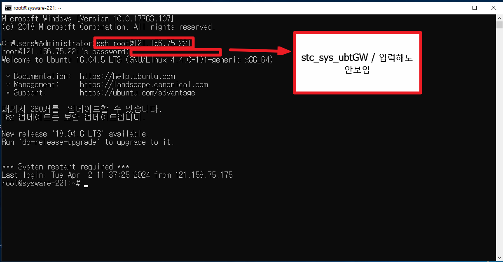
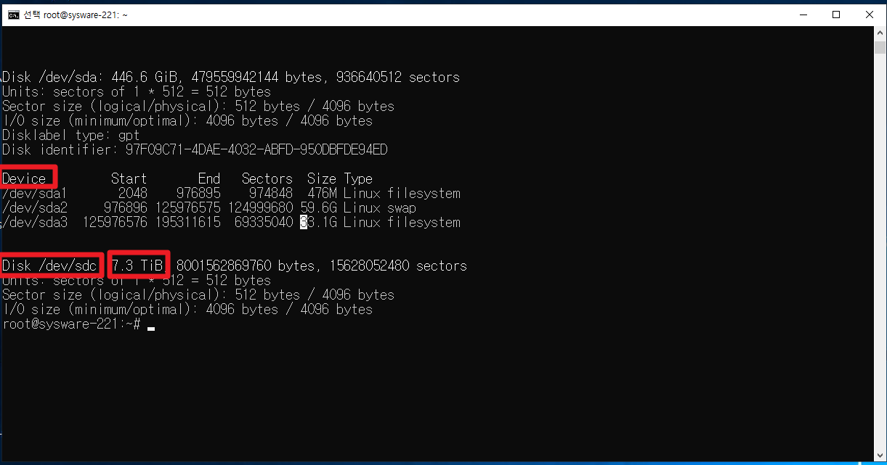
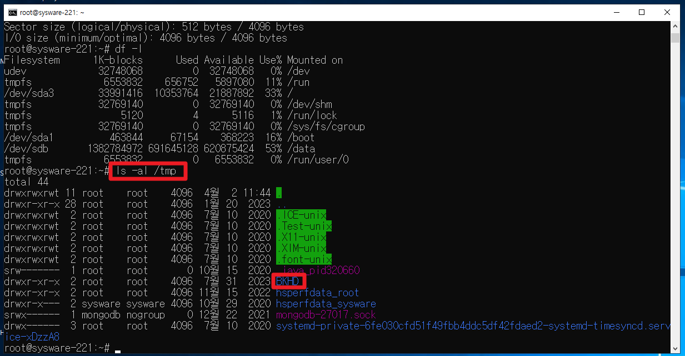
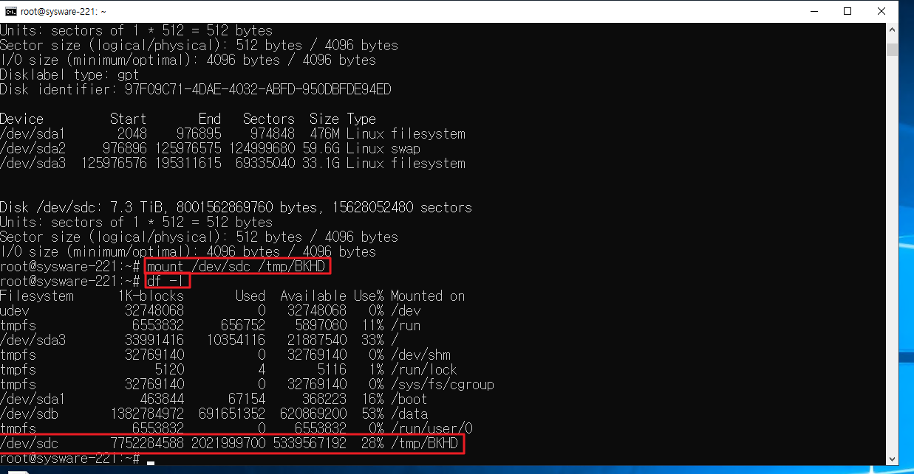
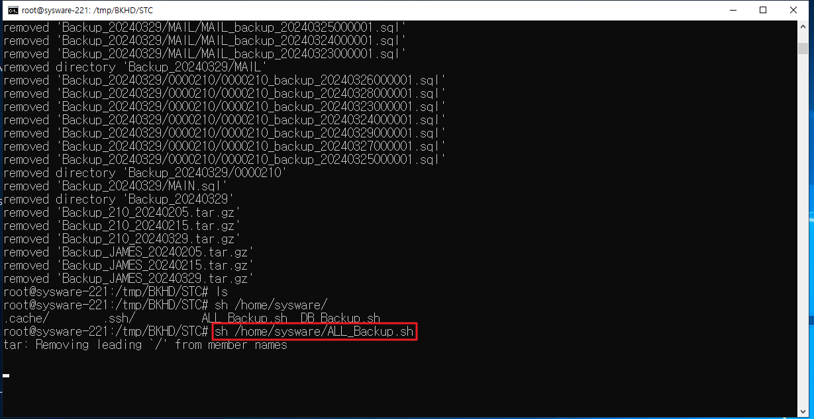

그룹웨어 백업
--*************************************
-- 그룹웨어 백업
--*************************************
121.156.75.175
* 그룹웨어 백업
나스 백업과 다름 / 그룹웨어는 리눅스를 사용
서버 자체에서 곧바로 외장하드로 백업
애초에 윈도우가 취약하기 때문에 나스를 사용하는 것
백업하는 그룹웨어 서버
1. 세스텍
2. 로봇앤드디자인
ssh 라는 프로토콜 사용 (원격 접속하는 하나의 방법)
ssh 계정명@IP
ssh : 원격 접속 프로토콜
*세스텍
ssh root@121.156.75.221
stc_sys_ubtGW
계정명 : 서버 접속하는 ID ( root )
IP : 서버 IP 주소 ( 121.156.75.221 )
비밀번호 (stc_sys_ubtGW)
*로봇앤드디자인
계정명 : 서버 접속하는 ID ( )
IP : 서버 IP 주소 ( )

접속하는 곳 : 세스텍 이라는 곳의 그룹웨어 서버
서버IP : 221 검색하면 => 관리명: 세스텍 나옴 여기에 아이디 비번있음
* 마운트 => 연결
물리적으로는 하드가 연결되어있지만, 우리가 볼 수 있도록 소프트웨어 적으로 연결하는 작업이 마운트
=> 꽂은 외장하드에 대한 경로지정
로그인 후
fdisk : 마운트 된 디스크 리스트
명령어 : fdisk -l (명령어 쓸 때는 - 써야함)

dev/sdb
dev/sda
dev/sdc 총 3가지가 인식 됌
여기서 8테라 짜리 (7.3) 용량을 보고 뭔지 알 수 있다.
+ Disk 로 되어있는거 확인 (Device 아님)
ex. Disk /dev/sdc : 7.3 TiB -> 이름은 계속 바뀔 수 있기 때문에 용량으로 확인
df -l 연결된거 보기 => sdc가 없음
Filesystemn / Mounted on
파일디스크 실제 위치
마운트 경로 : /tmp/BKHD 에 마운트를 해야함
한번 씩이 경로가 사라짐 => 있는지 먼저 확인해야함
=> 확인 명령어 : ls -al /tmp
(ls => 폴더에 뭐있는지 보는 명령어)
(al => a = all (전체) l(자세히))
(tmp => 폴더경로 이름)
=> BKHD 확인 (마운트 경로 이름)

* BKHD가 없는 경우 생성해야함
mkdir 경로
mkdir /tmp/BKHD
삭제 : rmdir /tmp/BKHD2
마운트 명령어 : mount 출발지(디스크) 경로(어디로할지)
mount /dev/sdc /tmp/BKHD
mount (dev/sdc) \<-> (tmp/BKHD) 이 두개의 폴더를 미러링하겠다
다시 df -l 눌렀을 때 BKHD를 볼 수 있다.

cd /tmp
ls => 리스트 보기
cd BKHD
ls =>
EMK RND STC => 파란색 = 폴더이름
cd STC/
ls
파란색 => 폴더
빨간색 => 압축파일 (tar.gz로 백업된 압축파일)
기존 파일 삭제 명령어 (파일 하나만 있어도 되기 때문에 기존에 있던 것들은 다 삭제 해도 된다)
rm -rvf *202402*
sh(쉘)파일 => 외장하드로 넣기위한 파일을 만들도록 해주는 파일
백업 스케줄러 명령어
sh /home/sysware/ALL_Backup.sh
탭 : 자동완성 ( / , 파일이름 일부만 쳐도 완성

해당 폴더 용량 확인 (0 이면 안된거니까)
du -sh /tmp/BKHDls -al폴더경로(STC)/*

df -l
ls -al /tml/BKHD/STC/
du -sh / tmp/BKHD/STC/*
umount -lf /dev/sdc
*/
마운트 해제
umount - lf /dev/sdb
1. 관리자권한으로 cmd창 실행
2. 로그인 > 세스텍기준ID : ssh root@121.156.75.221 / PW : stc_sys_ubtGW
로봇앤드기준ID : ssh root@121.156.75.169 / PW : )(dnjf23dlf(09월23일)
3. fdisk -l > 드라이브 연결확인 > 연결된 드라이브가 어디인지 확인함(8테라 내외) (연결 안되어있으면 안보임)
4. cd /tmp > ls 로 폴더 안 확인 > BKHD가 없으면 mkdir BKHD
5. mount /dev/sdc /*드라이브경로*/ /tmp/BKHD /*백업경로*/
6. cd BKHD > df -l 마운트 연결 확인ls
7. cd STC > du -sh >> 용량보기
8. cat /home/sysware/ALL_backup.sh -- 컨트롤 C하고 탭 , 수시로 엔터눌러 꺼지지 않게함
9. cd /tmp/BKHD/STC/ > ls -al -ls -a- 백업잘됐는지 확인
10. rm -rvf *삭제할텍스트* --이전 백업데이터 삭제 * *안의 텍스트가 포함된 이름 전체
11. 백업보고서 작성용 실행문 > df -h -- 마운트확인
> ls -al /tmp/BKHD/stc/ -- 폴더안 확인
> du - sh /tmp/BKHD/STC/* */
> umount -lf /dev/sdc -- 마운트 종료